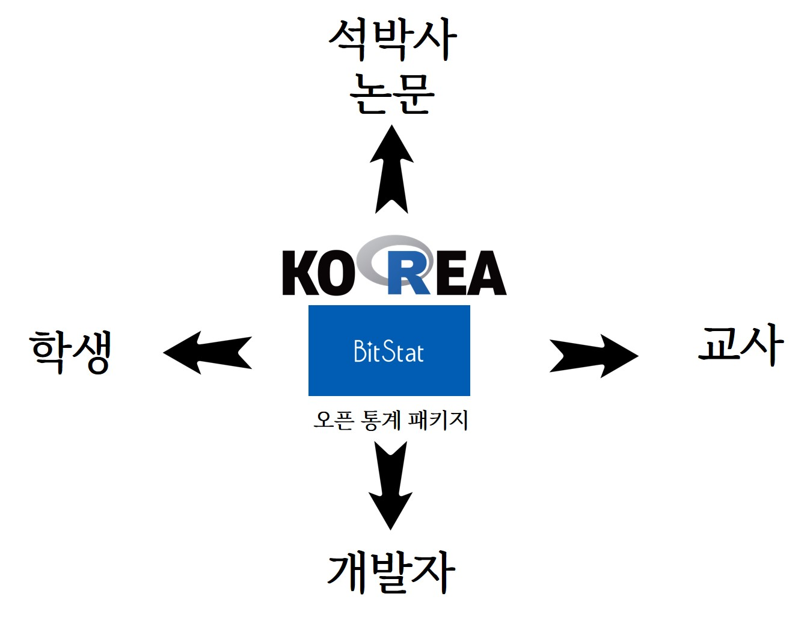

수학교육 통계패키지

이해당사자
한국 R 사용자회에서는 통계패키지를 사용하고 있는 다양한 사용자의 요구를 충족시키기 위해 다양한 기능이 포함된 소프트웨어, 콘텐츠, 데이터, 커뮤니티를 운영하고 있습니다.
- 학생: 귀납적 사고방식과 문제풀이 방식을 이해한 후에 학생 스스로 데이터를 가지고 분석을 할 수 있는 도구가 필요
- 교사: 귀납적 사고방식과 문제풀이 방식을 학생에게 전달할 수 있는 효과적인 도구가 필요
- 개발자: 학생과 교사 및 이해당사자가 필요한 통계 관련 콘텐츠, 데이터, 소프트웨어를 개발할 수 있는 플랫폼과 네트워크가 필요
- 석박사 논문: 데이터 사이언스 시대에 맞는 맞춤형 석박사 논문 제작 및 개발을 지원할 수 있는 도구가 필요
도구
- 교사 : https://github.com/bit2r/bitStat-HS
- 학생 : https://bitstat.shinyapps.io/bitstat/
- 개발자: https://github.com/bit2r
- 논문제작과 글쓰기
- 통계 가설검정: https://r2bit.shinyapps.io/infer_shiny/
- 디지털 글쓰기: http://r2bit.ddns.net/